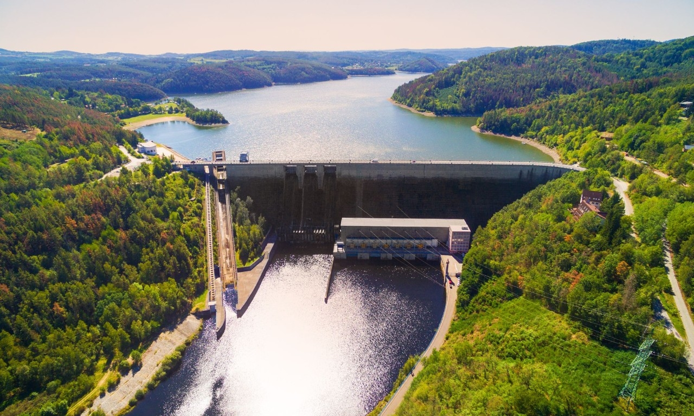
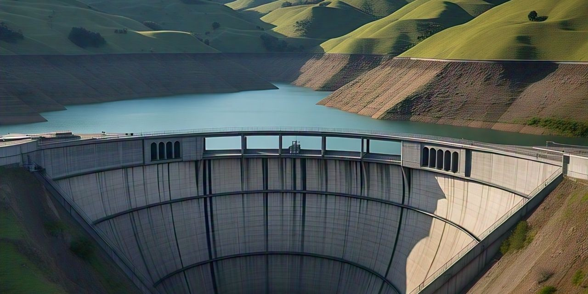
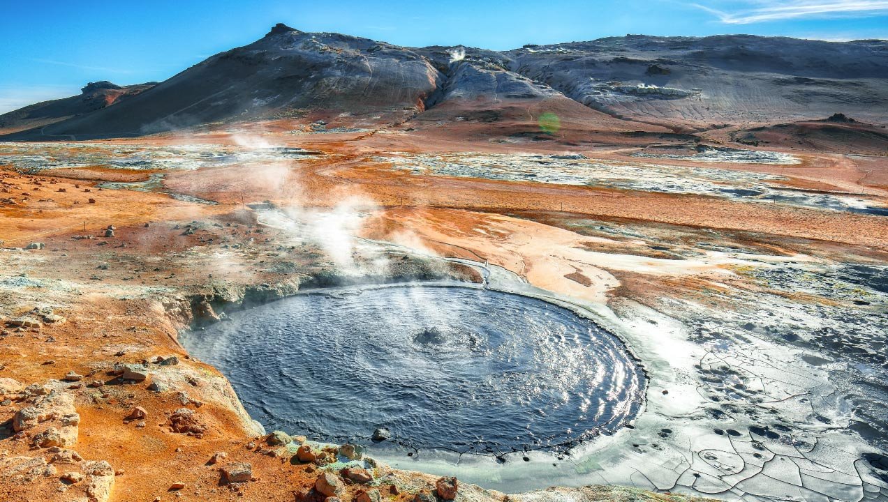

La energía hidroeléctrica es una fuente de energía renovable que aprovecha la fuerza del agua en movimiento para generar electricidad de forma limpia y sostenible.

Se obtiene mediante represas que controlan el flujo del agua, haciendo girar turbinas conectadas a generadores que producen electricidad.
La energía hídrica se obtiene del movimiento del agua (ríos, corrientes y presas) y se utiliza para generar electricidad mediante turbinas y generadores.
Descubre más ›Represas, turbinas, generadores y distribución: descubre el proceso que convierte la energía del agua en electricidad.
Descubre más ›
Saber cuánto consumes te ayuda a reducir tu huella y a tomar decisiones inteligentes sobre energía.
Descubre más ›El agua es un recurso natural valioso y vital para la vida en el planeta. A medida que aumentan las demandas de energía y la población mundial crece, el uso responsable de la energía hídrica se vuelve fundamental. Sin embargo, debemos ser conscientes de que, aunque las plantas hidroeléctricas proporcionan una fuente limpia y renovable de energía, su construcción puede tener impactos ambientales como la alteración de ecosistemas acuáticos y la pérdida de hábitats naturales. Por ello, es importante utilizarla de manera sostenible, promoviendo tecnologías que minimicen estos impactos y apoyando políticas que preserven nuestros recursos hídricos. La gestión eficiente y el cuidado de nuestras fuentes de agua no solo asegurarán el futuro energético, sino también la salud y bienestar de todos los seres vivos